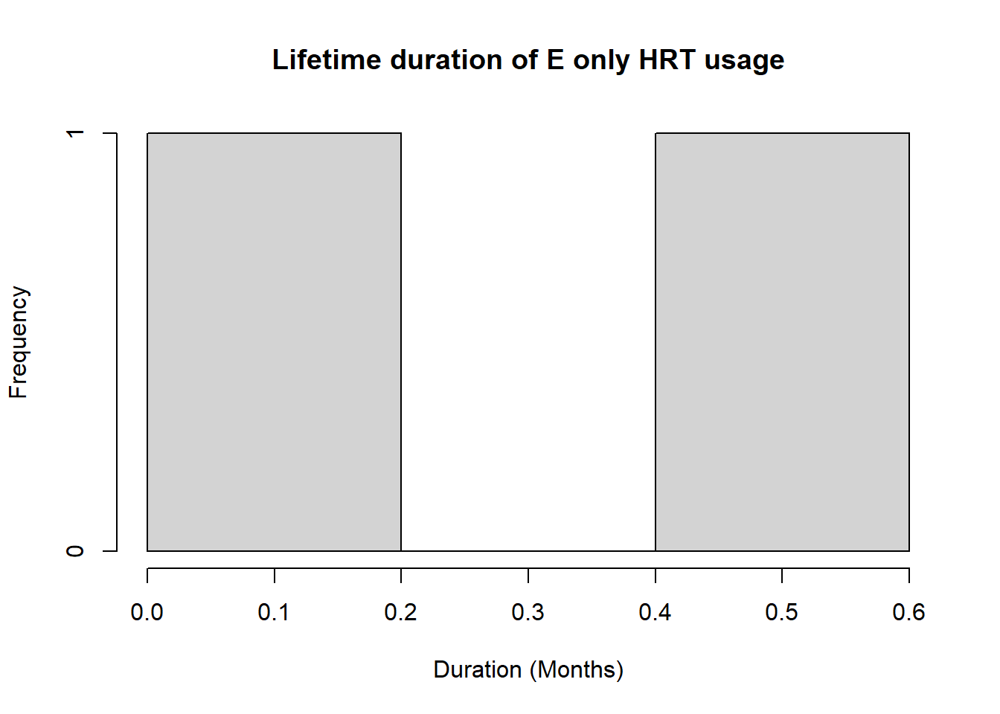
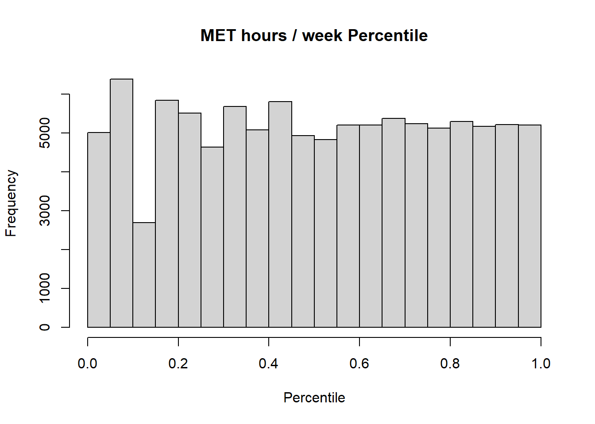

patient_data <- patient_data |> dplyr::mutate(fhx_fdr_brca = dplyr::case_when( fambrca ==0~0, fambrca ==1~1, fambrca ==9|is.na(fambrca) ~888),#fhx_fdr_brca = factor(fhx_fdr_brca, levels = c(0,1,888), labels = c("No Family History", "Family History", "Unknown")),Biopsies_yesno =case_when(is.na(brbensurgbiopsyN) | brbensurgbiopsyN ==888~888, brbensurgbiopsyN >0~1, brbensurgbiopsyN ==0~0,TRUE~888),Biopsies_number =case_when(is.na(brbensurgbiopsyN) | brbensurgbiopsyN ==888~888,TRUE~ brbensurgbiopsyN),BBD_history = dplyr::case_when(is.na(brbendis) | brbendis ==999~888, brbendis ==1~1, #BCRPP have coded this as 0 ~ No, 1 ~ Yes, 888 ~ Missing/Unknown. brbendis ==2~0, #We have this coded as 1 ~ Yes, 2 ~ No, 999 ~ Not known.TRUE~888),#BBD_history = factor(BBD_history, levels = c(0,1,888), labels = c("No", "Yes", "Missing")),BBD_number = dplyr::case_when(is.na(brbenN) | brbenN ==999~888, brbenN <5~ brbenN, #BCRPP records above 4 as 5 so adjustment. brbenN >4~5),BBD_type1 =888,BBD_type2 =888,BBD_year2 =8888,BBD_type3 =888,BBD_year3 =8888,BBD_type4 =888,BBD_year4 =8888,BBD_year1 = dplyr::case_when( BBD_number ==0~7777, brbendisage1 %in%c(888, 889, 999) |is.na(brbendisage1) ~8888, #Distinguish between missing and NA.TRUE~ brbendisage1 +year(ADOB_F)))#BBD_year2 - not collected.#BBD_type2 - not collected.#BBD_year3 - not collected.#BBD_type3 - not collected.#BBD_year4 - not collected.#BBD_type4 - not collected.
REPRODUCTIVE HISTORY
patient_data <- patient_data |> dplyr::rename(meno_reasonGS = meno_reason, meno_ageGS = meno_age)patient_data <- patient_data |> dplyr::mutate(pregdate_1_f =if_else(as.Date(pregdate_1_f, format ="%Y-%m-%d")<record_date, as.Date(pregdate_1_f, format ="%Y-%m-%d"), NA), #removing dates past entry - we are only concerned with R1pregdate_2_f =if_else(as.Date(pregdate_2_f, format ="%Y-%m-%d")<record_date, as.Date(pregdate_2_f, format ="%Y-%m-%d"), NA),pregdate_3_f =if_else(as.Date(pregdate_3_f, format ="%Y-%m-%d")<record_date, as.Date(pregdate_3_f, format ="%Y-%m-%d"), NA),pregdate_4_f =if_else(as.Date(pregdate_4_f, format ="%Y-%m-%d")<record_date, as.Date(pregdate_4_f, format ="%Y-%m-%d"), NA),pregdate_5_f =if_else(as.Date(pregdate_5_f, format ="%Y-%m-%d")<record_date, as.Date(pregdate_5_f, format ="%Y-%m-%d"), NA),pregdate_6_f =if_else(as.Date(pregdate_6_f, format ="%Y-%m-%d")<record_date, as.Date(pregdate_6_f, format ="%Y-%m-%d"), NA),pregdate_7_f =if_else(as.Date(pregdate_7_f, format ="%Y-%m-%d")<record_date, as.Date(pregdate_7_f, format ="%Y-%m-%d"), NA),pregdate_8_f =if_else(as.Date(pregdate_8_f, format ="%Y-%m-%d")<record_date, as.Date(pregdate_8_f, format ="%Y-%m-%d"), NA),pregdate_9_f =if_else(as.Date(pregdate_9_f, format ="%Y-%m-%d")<record_date, as.Date(pregdate_9_f, format ="%Y-%m-%d"), NA),missing_age_preg = dplyr::case_when(is.na(pregparitycnt) | pregparitycnt ==99~888, (pmax(pregparitycnt, 0) > (9- (is.na(pregdate_1_f) +is.na(pregdate_2_f) +is.na(pregdate_3_f) +is.na(pregdate_4_f) +is.na(pregdate_5_f) +is.na(pregdate_6_f) +is.na(pregdate_7_f) +is.na(pregdate_8_f) +is.na(pregdate_9_f)))) ~1, #Not enough dates for parity - can't do agepreg_x (pmax(pregparitycnt, 0) < (9- (is.na(pregdate_1_f) +is.na(pregdate_2_f) +is.na(pregdate_3_f) +is.na(pregdate_4_f) +is.na(pregdate_5_f) +is.na(pregdate_6_f) +is.na(pregdate_7_f) +is.na(pregdate_8_f) +is.na(pregdate_9_f)))) ~2, #Too many dates, will take bottom x amount for parity = x (pmax(pregparitycnt, 0) == (9- (is.na(pregdate_1_f) +is.na(pregdate_2_f) +is.na(pregdate_3_f) +is.na(pregdate_4_f) +is.na(pregdate_5_f) +is.na(pregdate_6_f) +is.na(pregdate_7_f) +is.na(pregdate_8_f) +is.na(pregdate_9_f)))) ~0),agemenarche = dplyr::case_when( menarcheage %in%c(888, 999) |is.na(menarcheage) ~888, #Distinguish between missing and NA. menarcheage ==777~777, menarcheage > age ~777,TRUE~ menarcheage),parous = dplyr::case_when( pregparitycnt>0& pregparitycnt !=99~1, #-1 refers to no pregnancies but BCRPP doesn't record this so go to 0. pregparitycnt %in%c(0,-1) ~0,is.na(pregparitycnt) | pregparitycnt ==99~888),#parous = factor(parous, levels = c(0,1,888), labels = c("Nonparous", "Parous", "Missing")),parity = dplyr::case_when( pregparitycnt>0& pregparitycnt !=99~ pregparitycnt, #-1 refers to no pregnancies but BCRPP doesn't record this so go to 0. pregparitycnt %in%c(0,-1) ~0,is.na(pregparitycnt) | pregparitycnt ==99~888),age_preg1 = dplyr::case_when( (missing_age_preg ==1& parity >=1) | missing_age_preg ==888| parity ==888~888, #Missing Data. parity ==0~777, #Subject is nonparous - no parous births.TRUE~floor(as.numeric(as.Date(pregdate_1_f, format ="%Y-%m-%d") -as.Date(ADOB_F, format ="%Y-%m-%d"))/365)),age_preg2 = dplyr::case_when( (missing_age_preg ==1& parity >=2) | missing_age_preg ==888| parity ==888~888, parity ==0~777, parity <2~666, #666 - no pregnancyTRUE~floor(as.numeric(as.Date(pregdate_2_f, format ="%Y-%m-%d") -as.Date(ADOB_F, format ="%Y-%m-%d"))/365)),age_preg3 = dplyr::case_when( (missing_age_preg ==1& parity >=3) | missing_age_preg ==888| parity ==888~888, parity ==0~777, parity <3~666,TRUE~floor(as.numeric(as.Date(pregdate_3_f, format ="%Y-%m-%d") -as.Date(ADOB_F, format ="%Y-%m-%d"))/365)),age_preg4 = dplyr::case_when( (missing_age_preg ==1& parity >=4) | missing_age_preg ==888| parity ==888~888, parity ==0~777, parity <4~666,TRUE~floor(as.numeric(as.Date(pregdate_4_f, format ="%Y-%m-%d") -as.Date(ADOB_F, format ="%Y-%m-%d"))/365)),age_preg5 = dplyr::case_when( (missing_age_preg ==1& parity >=5) | missing_age_preg ==888| parity ==888~888, parity ==0~777, parity <5~666,TRUE~floor(as.numeric(as.Date(pregdate_5_f, format ="%Y-%m-%d") -as.Date(ADOB_F, format ="%Y-%m-%d"))/365)),age_preg6 = dplyr::case_when( (missing_age_preg ==1& parity >=6) | missing_age_preg ==888| parity ==888~888, parity ==0~777, parity <6~666,TRUE~floor(as.numeric(as.Date(pregdate_6_f, format ="%Y-%m-%d") -as.Date(ADOB_F, format ="%Y-%m-%d"))/365)),age_preg7 = dplyr::case_when( (missing_age_preg ==1& parity >=7) | missing_age_preg ==888| parity ==888~888, parity ==0~777, parity <7~666,TRUE~floor(as.numeric(as.Date(pregdate_7_f, format ="%Y-%m-%d") -as.Date(ADOB_F, format ="%Y-%m-%d"))/365)),age_preg8 = dplyr::case_when( (missing_age_preg ==1& parity >=8) | missing_age_preg ==888| parity ==888~888, parity ==0~777, parity <8~666,TRUE~floor(as.numeric(as.Date(pregdate_8_f, format ="%Y-%m-%d") -as.Date(ADOB_F, format ="%Y-%m-%d"))/365)),age_preg9 = dplyr::case_when( (missing_age_preg ==1& parity >=9) | missing_age_preg ==888| parity ==888~888, parity ==0~777, parity <9~666,TRUE~floor(as.numeric(as.Date(pregdate_9_f, format ="%Y-%m-%d") -as.Date(ADOB_F, format ="%Y-%m-%d"))/365)),age_preg10 = dplyr::case_when( missing_age_preg ==1& parity >=10| missing_age_preg ==888| parity ==888~888, parity ==0~777, parity <10~666),breastfeed_dur_b1 = dplyr::case_when( #we measure in weeks, BCRPP measure in months. parity ==0~777, missing_age_preg ==0& bf_1 !=999&!is.na(bf_1) ~ bf_1/4, #Could change for more precision#missing_age_preg == 0 & bf_1 != 999 & !is.na(bf_1) ~ 555, #555 indicates still breastfeeding at start of study - so length unknown.TRUE~888),breastfeed_dur_b2 = dplyr::case_when( parity ==0~777, missing_age_preg ==0& bf_2 !=999&!is.na(bf_2) ~ bf_2/4,#missing_age_preg == 0 & bf_2 != 999 & !is.na(bf_2) ~ 555, parity <2~666, #no child to breastfeed - THIS IS MY CURRENT INTERPRETATION, ADVISE FROM BCRPP WHEN CONTACTED.TRUE~888),breastfeed_dur_b3 = dplyr::case_when( parity ==0~777, missing_age_preg ==0& bf_3 !=999&!is.na(bf_3) ~ bf_3/4,#missing_age_preg == 0 & bf_3 != 999 & !is.na(bf_3) ~ 555, parity <3~666,TRUE~888),breastfeed_dur_b4 = dplyr::case_when( parity ==0~777, missing_age_preg ==0& bf_4 !=999&!is.na(bf_4) ~ bf_4/4,#missing_age_preg == 0 & bf_4 != 999 & !is.na(bf_4) ~ 555, parity <4~666, TRUE~888),breastfeed_dur_b5 = dplyr::case_when( parity ==0~777, missing_age_preg ==0& bf_5 !=999&!is.na(bf_5) ~ bf_5/4,#missing_age_preg == 0 & bf_5 != 999 & !is.na(bf_5) ~ 555, parity <5~666,TRUE~888),breastfeed_dur_b6 = dplyr::case_when( parity ==0~777, missing_age_preg ==0& bf_6 !=999&!is.na(bf_6) ~ bf_6/4,#missing_age_preg == 0 & bf_6 != 999 & !is.na(bf_6) ~ 555, parity <6~666,TRUE~888),breastfeed_dur_b7 = dplyr::case_when( parity ==0~777, missing_age_preg ==0& bf_7 !=999&!is.na(bf_7) ~ bf_7/4,#missing_age_preg == 0 & bf_7 != 999 & !is.na(bf_7) ~ 555, parity <7~666,TRUE~888),breastfeed_dur_b8 = dplyr::case_when( parity ==0~777, missing_age_preg ==0& bf_8 !=999&!is.na(bf_8) ~ bf_8/4,#missing_age_preg == 0 & bf_8 != 999 & !is.na(bf_8) ~ 555, parity <8~666,TRUE~888),breastfeed_dur_b9 = dplyr::case_when( parity ==0~777, missing_age_preg ==0& bf_9 !=999&!is.na(bf_9) ~ bf_9/4,#missing_age_preg == 0 & bf_9 != 999 & !is.na(bf_9) ~ 555, parity <9~666,TRUE~888),breastfeed_dur_b10 = dplyr::case_when( parity ==0~777, parity <10~666,TRUE~888),breastfeed_dur = dplyr::case_when( parity ==0~777, #Nonparous. missing_age_preg ==1| missing_age_preg ==888~888, #If any lengths are unknown - so is total length. Could potentially report total KNOWN length. breastfeed_dur_b1 ==888| breastfeed_dur_b2 ==888| breastfeed_dur_b3 ==888| breastfeed_dur_b4 ==888| breastfeed_dur_b5 ==888| breastfeed_dur_b6 ==888| breastfeed_dur_b7 ==888| breastfeed_dur_b8 ==888| breastfeed_dur_b9 ==888~888,#breastfeed_dur_b1 == 555 | breastfeed_dur_b2 == 555 | breastfeed_dur_b3 == 555 | breastfeed_dur_b4 == 555 | #breastfeed_dur_b5 == 555 | breastfeed_dur_b6 == 555 | breastfeed_dur_b7 == 555 | breastfeed_dur_b8 == 555 | #breastfeed_dur_b9 == 555 ~ 555,TRUE~if_else(breastfeed_dur_b1!=666, breastfeed_dur_b1, 0) +if_else(breastfeed_dur_b2!=666, breastfeed_dur_b2, 0) +if_else(breastfeed_dur_b3!=666, breastfeed_dur_b3, 0) +if_else(breastfeed_dur_b4!=666, breastfeed_dur_b4, 0) +if_else(breastfeed_dur_b5!=666, breastfeed_dur_b5, 0) +if_else(breastfeed_dur_b6!=666, breastfeed_dur_b6, 0) +if_else(breastfeed_dur_b7!=666, breastfeed_dur_b7, 0) +if_else(breastfeed_dur_b8!=666, breastfeed_dur_b8, 0) +if_else(breastfeed_dur_b9!=666, breastfeed_dur_b9, 0) ),breastfeed = dplyr::case_when( breastfeed_dur ==777~777, #Nonparous. (!breastfeed_dur_b1 %in%c(0,666,777,888)) | (!breastfeed_dur_b2 %in%c(0,666,777,888)) | (!breastfeed_dur_b3 %in%c(0,666,777,888)) |#If we have ANY known knowledge of breastfeeding, can report as breastfed. (!breastfeed_dur_b4 %in%c(0,666,777,888)) | (!breastfeed_dur_b5 %in%c(0,666,777,888)) | (!breastfeed_dur_b6 %in%c(0,666,777,888)) | (!breastfeed_dur_b7 %in%c(0,666,777,888)) | (!breastfeed_dur_b8 %in%c(0,666,777,888)) | (!breastfeed_dur_b9 %in%c(0,666,777,888)) ~1, breastfeed_dur ==0~0, #Might discuss about cutoffs for breastfeeding. i.e. if they breastfed for 1 week did they likely breastfeed?TRUE~888), ##### Need to discuss interplay of recoding for breastfeed_dur_bx and making sure whatever they do works with our duration and existence variable!!#breastfeed = factor(breastfeed, levels = c(0,1,777,888), labels = c("No (Parous)", "Yes", "No (Nonparous)", "Missing")),ocuse_ever = dplyr::case_when( ocever ==0~0, #Never ocever ==1~1, #Everis.na(ocever) ~888), #NK#ocuse_ever = factor(ocuse_ever, levels = c(0,1,888), labels = c("Never", "Ever", "Missing")),ocuse_current = dplyr::case_when( ocstatus %in%c(0,1) ~0, #We have this coded as 0 ~ never, 1 ~ former, 2 ~ current, 888 ~ error, 999/9999 ~ NK ocstatus ==2~1, #BCRPP have this coded as 0 ~ no, 1 ~ yes, 888 ~ missing/unknown ocstatus %in%c(888, 999, 9999) |is.na(ocstatus) ~888),#ocuse_current = factor(ocuse_current, levels = c(0,1,888), labels = c("No", "Yes", "Missing")),ocuse_start = dplyr::case_when( ocstatus ==0~777, #never started oc1age %in%c(888, 999) |is.na(oc1age) ~888, oc1age > AgeatEntry ~888, oc1age <= AgeatEntry ~ oc1age),ocuse_stop = dplyr::case_when( ocstatus ==0~777, #never started ocstatus ==2~666, #currently using ocLage %in%c(888, 999) |is.na(ocLage) ~888, ocLage < oc1age ~888, ocstatus ==1& ocLage <= AgeatEntry ~ ocLage,TRUE~888),ocuse_dur = dplyr::case_when( ocstatus ==0~777, ocstatus ==888~888, ocuse_start ==888~888, #they want duration in months, we have it in years. ocstatus ==2& AgeatEntry > ocuse_start ~if_else(AgeatEntry == ocuse_start, 6, 12*(AgeatEntry - ocuse_start)), ocuse_stop ==888~888, ocstatus ==1~if_else(ocuse_stop == ocuse_start, 0.5, ocuse_stop - ocuse_start),TRUE~888 ),othcontracep_ever =case_when(is.na(R1_Other_Hormones) | R1_Other_Hormones ==888~888, R1_Other_Hormones >0~1, R1_Other_Hormones ==0~0,TRUE~888),othcontracep_current =case_when(is.na(R1_Other_Hormones) | R1_Other_Hormones ==888~888, R1_Other_Hormones ==0~0,TRUE~888),meno_status = dplyr::case_when( R1menopause %in%c(1,3) ~1, #BCRPP have this coded as 1~Post, 2~Pre, 3~Peri, 888~Unknown/Missing R1menopause %in%c(2,4) ~2, #We have this coded as 1~Post, 2~Pre, 3~Assumed Post, 4~Assumed Pre, 8~Not Known, 9~Never had periods, 10~Didn't complete R1menopause %in%c(8,9, 10) |is.na(R1menopause) ~888),#meno_status = factor(meno_status, levels = c(1,2,888), labels = c("Postmenopausal", "Premenopausal", "Missing")),meno_age = dplyr::case_when( meno_status ==2~777, meno_ageGS %in%c(888,999) |is.na(meno_ageGS) ~888, meno_ageGS ==777| meno_ageGS > age ~777,TRUE~ meno_ageGS),#BCRPP have this coded as 1~Natural, 2~Surgical. 3~Radiation/Chemo, 4~Medication, 5~Artificial/Induced, 777~Premeno, 888~Missing/Unknown#We have this coded as 1~Natural, 2~Surgery (Bilat), 3~Surgery (Hyst), 4~Surgery (Not Known), 5~chemo/radio/treatment, 6~Not Known #7~Other, 8~Not Known (On Hormones), 9~Not Known (HRT), 10~Not Known (Stress), 11~Premeno (Preg/bf), 12~Perimeno, 13~Nat Meno on HRT/OC #14~ED/Low Weight, 15~Illness, 16~Premeno, 17~Status NK, 18~Surgery (Not Bilat or Hyst), 19~Never Periods, 777~Premeno.meno_reason = dplyr::case_when( meno_status ==2~777, meno_reasonGS ==1~1, meno_reasonGS %in%c(2, 3, 4, 18) ~2, meno_reasonGS ==5~3, #Treatments also sent here - worth reviewing. meno_reasonGS ==13~4, #Talk to Montse about thisFALSE~5, meno_reasonGS %in%c(11, 16, 777) ~777, meno_reasonGS %in%c(6,7,8,9,10,12,14,15,17,19) ~888,TRUE~888))#meno_reason = factor(meno_reason, levels = c(1,2,3,4,5,777,888), labels = c("Natural", "Surgical", "Radiation/Chemo", "Medication", "Artificial/Induced", "Premenopausal", "Missing")))
HORMONE REPLACEMENT THERAPY
#Altering surrent variables to replace NAs so coding new variables is easier.patient_data[grepl("HRTtype1", colnames(patient_data))][is.na(patient_data[grepl("HRTtype1", colnames(patient_data))])] <-'888'patient_data <- patient_data |>#dplyr::mutate(across(starts_with('HRTtype1')), ~ if_else(is.na(.), "888", .)) |> #NA makes hrtep_dur code much harder so remove to new category#dplyr::mutate(across(starts_with('HRTstartage_')), ~ if_else(is.na(.), 888, .)) |> dplyr::mutate(hrt1age =if_else(hrt1age>AgeatEntry, NA, hrt1age),hrtLage =if_else(hrtLage>AgeatEntry, NA, hrtLage),hrtuse = dplyr::case_when( meno_status ==2~0, hrtstatus ==0~0, #BCRPP have this coded as 0 ~ never, 1 ~ current, 2 ~ former, 3 ~ ever, 888 ~ missing/unknown hrtstatus ==1~2, #We have this coded as 0 ~ never, 1 ~ former, 2 ~ Current, 888/999 ~ error/not known hrtstatus ==2~1, hrtstatus %in%c(888,999) |is.na(hrtever) ~888),#hrtuse = factor(hrtuse, levels = c(0,1,2,3,888), labels = c("Never", "Current", "Former", "Ever", "Missing")),hrt_dur = dplyr::case_when( #BCRPP measure in months, we have data in ages. meno_status ==2~666, #Never used - premenopausal hrtever ==0~777, #Never usedis.na(hrt1age) |is.na(hrtLage) ~888, #alternate codes as data overlaps. BCRPP use 666,777,888. hrt1age <= hrtLage ~if_else(hrtLage==hrt1age, 6, 12*(hrtLage - hrt1age))),hrtdur_1 = dplyr::case_when( HRTendage_1 < HRTstartage_1 |is.na(HRTstartage_1) |is.na(HRTendage_1) | HRTstartage_1 > AgeatEntry ~NA, HRTendage_1 > AgeatEntry ~if_else(HRTstartage_1==AgeatEntry, 0.5, AgeatEntry - HRTstartage_1),TRUE~if_else(HRTstartage_1 == HRTendage_1, 0.5, HRTendage_1 - HRTstartage_1)),hrtdur_2 = dplyr::case_when( HRTendage_2 < HRTstartage_2 |is.na(HRTstartage_2) |is.na(HRTendage_2) | HRTstartage_2 > AgeatEntry ~NA, HRTendage_1 > AgeatEntry ~if_else(HRTstartage_2==AgeatEntry, 0.5, AgeatEntry - HRTstartage_2),TRUE~if_else(HRTstartage_2 == HRTendage_2, 0.5, HRTendage_2 - HRTstartage_2)),hrtdur_3 = dplyr::case_when( HRTendage_3 < HRTstartage_3 |is.na(HRTstartage_3) |is.na(HRTendage_3) | HRTstartage_3 > AgeatEntry ~NA, HRTendage_1 > AgeatEntry ~if_else(HRTstartage_3==AgeatEntry, 0.5, AgeatEntry - HRTstartage_3),TRUE~if_else(HRTstartage_3 == HRTendage_3, 0.5, HRTendage_3 - HRTstartage_3)),hrtdur_4 = dplyr::case_when( HRTendage_4 < HRTstartage_4 |is.na(HRTstartage_4) |is.na(HRTendage_4) | HRTstartage_4 > AgeatEntry ~NA, HRTendage_1 > AgeatEntry ~if_else(HRTstartage_4==AgeatEntry, 0.5, AgeatEntry - HRTstartage_4),TRUE~if_else(HRTstartage_4 == HRTendage_4, 0.5, HRTendage_4 - HRTstartage_4)),# HRTtype1_1 = if_else(is.na(HRTtype1_1), "888", HRTtype1_1),# HRTtype1_2 = if_else(is.na(HRTtype1_2), "888", HRTtype1_2),# HRTtype1_3 = if_else(is.na(HRTtype1_3), "888", HRTtype1_3),# HRTtype1_4 = if_else(is.na(HRTtype1_4), "888", HRTtype1_4),hrtuse_ep = dplyr::case_when( hrtuse ==0~0, hrtprep ==2~3, #if they report at beginning have used EP, can say they have ever used it. (HRTtype1_1 =="EandP")*(HRTstartage_1<AgeatEntry)*(!is.na(HRTstartage_1)) + (HRTtype1_2 =="EandP")*(HRTstartage_2<AgeatEntry)*(!is.na(HRTstartage_2)) + (HRTtype1_3 =="EandP")*(HRTstartage_3<AgeatEntry)*(!is.na(HRTstartage_3)) + (HRTtype1_4 =="EandP")*(HRTstartage_4<AgeatEntry)*(!is.na(HRTstartage_4)) >0~3, (HRTtype1_1 =="EandP") + (HRTtype1_1 =="EandP") + (HRTtype1_1 =="EandP") + (HRTtype1_1 =="EandP") >0~888, TRUE~0),#hrtuse_ep = factor(hrtuse_ep, levels = c(0,1,2,3,888), labels = c("Never", "Current", "Former", "Ever", "Missing")),hrtep_dur = (HRTtype1_1 =="EandP")*hrtdur_1 +(HRTtype1_2 =="EandP")*hrtdur_2 +(HRTtype1_3 =="EandP")*hrtdur_3 +(HRTtype1_4 =="EandP")*hrtdur_4,hrtep_dur = dplyr::case_when( meno_status ==2~666, #Never used - premenopausal hrtuse_ep ==0~777,is.na(hrtep_dur) ~888,TRUE~ hrtep_dur),hrtuse_eonly = dplyr::case_when( hrtuse ==0~0, hrtprep ==1~3, #if they report at beginning have used E, can say they have ever used it. (HRTtype1_1 =="Eonly")*(HRTstartage_1<AgeatEntry)*(!is.na(HRTstartage_1)) + (HRTtype1_2 =="Eonly")*(HRTstartage_2<AgeatEntry)*(!is.na(HRTstartage_2)) + (HRTtype1_3 =="Eonly")*(HRTstartage_3<AgeatEntry)*(!is.na(HRTstartage_3)) + (HRTtype1_4 =="Eonly")*(HRTstartage_4<AgeatEntry)*(!is.na(HRTstartage_4)) >0~3, (HRTtype1_1 =="Eonly") + (HRTtype1_1 =="Eonly") + (HRTtype1_1 =="Eonly") + (HRTtype1_1 =="Eonly") >0~888,TRUE~0),#hrtuse_eonly = factor(hrtuse_eonly,levels = c(0,1,2,3,888), labels = c("Never", "Current", "Former", "Ever", "Missing")),hrteonly_dur = (HRTtype1_1 =="Eonly")*hrtdur_1 +(HRTtype1_2 =="Eonly")*hrtdur_2 +(HRTtype1_3 =="Eonly")*hrtdur_3 +(HRTtype1_4 =="Eonly")*hrtdur_4,hrteonly_dur = dplyr::case_when( meno_status ==2~666, #Never used - premenopausal hrtuse_eonly==0~777,is.na(hrteonly_dur) ~888,TRUE~ hrteonly_dur ) )
PHYSICAL ACTIVITY
patient_data <- patient_data |> dplyr::mutate(pa_mets = dplyr::case_when( PhysMetRecTot %in%c(8888,9999) |is.na(PhysMetRecTot) ~888, #They use 888 for error but we have data above 888?TRUE~ PhysMetRecTot),pa_pct = dplyr::case_when( pa_mets ==888~888,TRUE~rank(pa_mets)/(length(pa_mets) -sum(pa_mets ==888))) )
# identify invasive or DCIS-breast cancer, and invasive breast cancer (including DCIS). Code specification from Michael so can discuss with Montse whether this is correct.cancer_data <- cancer_data |> dplyr::mutate(# identify any invasive cancer (including breast cancer) and DCIS-breast cancer (exclude NMSC)cancer =ifelse(!((str_sub(ICDt, 1, 3) =='C44') | (str_sub(ICDt, 1, 3) =='173')) & ((str_sub(ICDt, 1, 1) =='C') | (str_sub(ICDt, 1, 1) =='1') | (str_sub(ICDt, 1, 2) =='20') | (str_sub(ICDt, 1, 4) =='D051') | (str_sub(ICDt, 1, 4) =='D059') | (str_sub(ICDt, 1, 4) =='2330')) , 1 , 0 ),# identify invasive or DCIS-breast cancerbreast_cancer =ifelse( (str_sub(ICDt, 1, 3) =='C50') | (str_sub(ICDt, 1, 3) =='174') | (str_sub(ICDt, 1, 4) =='D051') | (str_sub(ICDt, 1, 4) =='D059') | (str_sub(ICDt, 1, 4) =='2330') , 1 , 0 ) )
This is code from Michael. Will discuss whether this set of DCIS codes is appropriate.
FILTERING DATA
Temporarily altered code to ensure all cases are caught, in process of changing back to get second breast cancer diagnosis for BCRPP standards.
cancer_data <- cancer_data |># dplyr::select invasive cancer or DCIS-breast cancer dplyr::filter(cancer ==1) |> dplyr::mutate(diagdate_f = dplyr::case_when(!is.na(diagdate_f) ~as.Date(diagdate_f, format ="%Y-%m-%d"),TRUE~as.Date("08/08/8000", format ="%d/%m/%Y"))) |># identify first dplyr::selected cancer based on age diagnosis: give priority to registry over reported information dplyr::group_by(tcode) |> dplyr::arrange(tcode, diagdate_f, Reginfo_Clusterino, Report_Cluster) |>do(head(., n=1)) |>#dplyr::mutate(n_tcode = order(tcode),# breast_n_tcode = order(tcode)*breast_cancer,# breast_first = breast_cancer[1]==1, #Indicator for breast cancer being their first cancer.# dplyr::select = if_else(breast_first==1, if_else(breast_n_tcode > 0 & breast_n_tcode<=n_tcode[breast_n_tcode>0][2], 1, 0), if_else(n_tcode==1, 1, 0))) |> #If first BC, take first and (if applicable) second BC event. If other cancer first, take only this. # dplyr::select first dplyr::selected cancer#dplyr::filter(dplyr::select==1) |> #need to adjust to get first two BC.ungroup()cancer_data <- cancer_data |> dplyr::rename(stageGS = stage, gradeGS = grade) #BCRPP has same naming code for these two values so need to change names temporarily.
HARMONISATION
cancer_data <- cancer_data |> dplyr::mutate(dxdate = dplyr::case_when(is.na(diagdate_f) |year(as.Date(diagdate_f, format ="%Y-%m-%d")) ==9999~NA,TRUE~as.Date(diagdate_f, format ="%Y-%m-%d")),detection = dplyr::case_when(is.na(screen_Detected) | screen_Detected =="U"~888, screen_Detected =="Y"~1, screen_Detected =="N"~2),#detection = factor(detection, levels = c(1,2,888), labels = c("Screen Detected", "Not Screen Detected", "Missing")),#detection_detailinvasive = dplyr::case_when( breast_cancer !=1~777, (str_sub(ICDt, 1, 3) =="174") ~1, #invasive (str_sub(ICDt, 1, 3) =="233") ~2, #in-situ (str_sub(ICDt, 1, 3) =="C50") ~1, (str_sub(ICDt, 1, 3) =="D05") ~2, #Check mapping carcinoma as non invasive???TRUE~888),#invasive = factor(invasive, levels = c(1,2,888), labels = c("Invasive", "Not Invasive", "Missing")),stage = dplyr::case_when( #wrong name for check purposes, will dplyr::rename at check.str_sub(stageGS, 1, 1) ==0~0,str_sub(stageGS, 1, 1) ==1| stageGS =="I"~1,str_sub(stageGS, 1, 1) ==2| stageGS =="II"~2,str_sub(stageGS, 1, 1) ==3| stageGS =="III"~3,str_sub(stageGS, 1, 1) ==4| stageGS =="IV"~4,TRUE~888),grade = dplyr::case_when(is.na(gradeGS) ~888, gradeGS ==1~1, gradeGS ==2~2, gradeGS %in%c(3) ~3, gradeGS %in%c("Low", "low") ~1, gradeGS %in%c("Intermediate", "intermediate") ~2, gradeGS %in%c("High", "high") ~3,TRUE~888), # Have a 4, 5 and a 6 here, have just labelled them as NA for now. Will ask Penny.size = dplyr::case_when(is.na(as.numeric(Tsize)) ~888,TRUE~as.numeric(Tsize)),sizecat = dplyr::case_when( #### Make sure this works after QCing the size data for outliers. size ==888~888, size >0& size <=20~1, size <=50~2,TRUE~3),er = dplyr::case_when(is.na(er_Status) ~888, er_Status =="Negative"~0, er_Status =="Positive"~1),#er = factor(er, levels = c(0,1,888), labels = c("Negative", "Positive", "Missing")),pr = dplyr::case_when(is.na(pr_Status) ~888, pr_Status =="Negative"~0, pr_Status =="Positive"~1),#pr = factor(pr, levels = c(0,1,888), labels = c("Negative", "Positive", "Missing")),her2 = dplyr::case_when(is.na(her2_Status) ~888, her2_Status =="Negative"~0, her2_Status =="Positive"~1,TRUE~888),#her2 = factor(her2, levels = c(0,1,888), labels = c("Negative", "Positive", "Missing")),ki67 =888,ki67cat = dplyr::case_when(is.na(ki67_status) ~888, ki67_status =="Negative"~0, ki67_status =="Positive"~1)#ki67cat = factor(ki67cat, levels = c(0,1,888), labels = c("Negative", "Positive", "Missing")) )
Merging Risk Factor and Cancer Data
## GRAB DATA FOR SECOND PRIMARY CANCER ##cancer_data_long <- cancer_data |> dplyr::group_by(tcode) |> dplyr::arrange(dxdate) |> dplyr::summarise(breast_cancer = breast_cancer[1], dxdate_primary1 = dxdate[1], dxdate_primary2 = dxdate[2],detection_primary1 = detection[1], detection_primary2 = detection[2],invasive_primary1 = invasive[1], invasive_primary2 = invasive[2],stage_primary1 = stage[1], stage_primary2 = stage[2],grade_primary1 = grade[1], grade_primary2 = grade[2],size_primary1 = size[1], size_primary2 = size[2],sizecat_primary1 = sizecat[1], sizecat_primary2 = sizecat[2],er_primary1 = er[1], er_primary2 = er[2],pr_primary1 = pr[1], pr_primary2 = pr[2],her2_primary1 = her2[1], her2_primary2 = her2[2],ki67_primary1 = ki67[1], ki67_primary2 = ki67[2],ki67cat_primary1 = ki67cat[1], ki67cat_primary2 = ki67cat[2])## MERGE RISK FACTOR DATA WITH CANCER DATA ##rf0 <-merge(patient_data, cancer_data_long, by.x ="subject_id", by.y ="tcode", all.x =TRUE)rf0 <- rf0 |>#Recoding NA rows in new data - checked earlier for NA in patient data so should have no issues. dplyr::mutate(breast_cancer =case_when( breast_cancer ==1~1,TRUE~0)) |> dplyr::mutate_if(is.Date, ~if_else(is.na(.), as.Date("08/08/8000", format ="%d/%m/%Y"), .)) #They don't specify NA value for dates, chose similar format to missing for dates.paste(nrow(rf0), "Participants")
freq(factor(rf0$lastfollowup, levels =c(0,1), labels =c("Before Last Follow Up", "At Last Follow Up")), cumul = F)
Frequencies
Freq % Valid % Total
--------------------------- -------- --------- ---------
Before Last Follow Up 104238 100.00 100.00
At Last Follow Up 0 0.00 0.00
<NA> 0 0.00
Total 104238 100.00 100.00
birth_year
summary(rf0$birth_year[rf0$birth_year!=888])
Min. 1st Qu. Median Mean 3rd Qu. Max.
1898 1941 1951 1952 1962 1993
Frequencies
Freq % Valid % Total
------------ -------- --------- ---------
Female 104238 100.00 100.00
Male 0 0.00 0.00
<NA> 0 0.00
Total 104238 100.00 100.00
Generation study is all female - may need to discuss existence of trans participants within the study. This was brought up briefly but I have not followed up.
age
summary(rf0$age[rf0$age!=888])
Min. 1st Qu. Median Mean 3rd Qu. Max.
16.00 36.00 47.00 46.41 57.00 102.00
hist(rf0$age[rf0$age!=888], main ="Age at start of study", xlab ="Age")
race
BCRPP have this coded as 1 ~ White, 2 ~ Black/African American, 3 ~ Asian, 4 ~ Native Hawaiin/Pacific Islander, 5 ~ American Indian/Alaska Native, 6 ~ Other (inc. multiracial), 888 ~ Missing. We have this coded as 1 ~ White, 2 ~ Black, 3 ~ South Asian, 4 ~ Other/Mixed, 9 ~ Not Known. Table should reflect proper conversion to BCRPP coding system.
We do not have data on participants ethnicity in the same way that BCRPP uses it.
summary(as.factor(rf0$ethnicity))
0
104238
education
We only have data on age left education. In order to provide some information without distinct value as BCRPP requires, we made a linear assumption. We assumed high school continued until age 18, university until age 22 and a postgrad window of 23-30 years old. Anything older we coded as unknown. BCRPP code this as 1 ~ less than high school, 2 ~ high school, 3 ~ some college education, 4 ~ university degree, 5 ~ postgrad.
Frequencies
Freq % Valid % Total
----------------------- -------- --------- ---------
Below High School 42368 40.65 40.65
High School 15933 15.29 15.29
Some College 20914 20.06 20.06
University 9918 9.51 9.51
Post Graduate 8735 8.38 8.38
Missing/Unknown 6370 6.11 6.11
<NA> 0 0.00
Total 104238 100.00 100.00
AJAncestry
We have the same coding. 0 ~ No AJ ancestry, 1 ~ AJ ancestry
hist(rf0$alcohol_amt[rf0$alcohol_amt!=888], main ="Amount of alcohol consumed per week at recruitment", xlab="Alcohol (g)")
Lots of high outliers potentially driven by heavy drinkers. BCRPP code should remove outliers as they do not have the classification of heavy drinker as Michael has suggested.
alcohol_init
BCRPP have coded 777 as non-drinker and summary statistics show how many non drinkers we have in the study.
Frequencies
Freq % Valid % Total
----------------------- -------- --------- ---------
No Family History 88033 84.45 84.45
Family History 16205 15.55 15.55
Unknown 0 0.00 0.00
<NA> 0 0.00
Total 104238 100.00 100.00
hist(rf0$breastfeed_dur_b1[!rf0$breastfeed_dur_b1%in%c(777,888)], main ="Duration of breastfeeding for first parous pregnancy", xlab ="Duration (Weeks)")
Again, very large values here.
breastfeed_dur_b2
Here 777 and 888 retain meaning, but 666 denotes less than 2 pregnancies. This is part of the ongoing coding discussion with BCRPP.
hist(rf0$breastfeed_dur_b2[!rf0$breastfeed_dur_b2%in%c(666,777,888)], main ="Duration of breastfeeding for second parous pregnancy", xlab ="Duration (Weeks)")
hist(rf0$breastfeed_dur_b3[!rf0$breastfeed_dur_b3%in%c(666,777,888)], main ="Duration of breastfeeding for third parous pregnancy", xlab ="Duration (Weeks)")
hist(rf0$breastfeed_dur_b4[!rf0$breastfeed_dur_b4%in%c(666,777,888)], main ="Duration of breastfeeding for fourth parous pregnancy", xlab ="Duration (Weeks)")
hist(rf0$breastfeed_dur_b5[!rf0$breastfeed_dur_b5%in%c(666,777,888)], main ="Duration of breastfeeding for fifth parous pregnancy", xlab ="Duration (Weeks)")
hist(rf0$breastfeed_dur_b6[!rf0$breastfeed_dur_b6%in%c(666,777,888)], main ="Duration of breastfeeding for sixth parous pregnancy", xlab ="Duration (Weeks)")
hist(rf0$breastfeed_dur_b7[!rf0$breastfeed_dur_b7%in%c(666,777,888)], main ="Duration of breastfeeding for seventh parous pregnancy", xlab ="Duration (Weeks)")
hist(rf0$breastfeed_dur_b8[!rf0$breastfeed_dur_b8%in%c(666,777,888)], main ="Duration of breastfeeding for eighth parous pregnancy", xlab ="Duration (Weeks)")
hist(rf0$breastfeed_dur_b9[!rf0$breastfeed_dur_b9%in%c(666,777,888)], main ="Duration of breastfeeding for ninth parous pregnancy", xlab ="Duration (Weeks)")
breastfeeding_dur_b10
Again, no duration information but can do less fine grain data here.
BCRPP have this coded as 1~Post, 2~Pre, 3~Peri, 888~Unknown/Missing. We have this coded as 1~Post, 2~Pre, 3~Assumed Post, 4~Assumed Pre, 8~Not Known, 9~Never had periods, 10~Didnt complete.
Min. 1st Qu. Median Mean 3rd Qu. Max.
14.00 47.00 50.00 49.32 53.00 62.00
plot_usage("meno_age")
Frequencies
Freq % Valid % Total
------------------- -------- --------- ---------
Non-Missing 31689 30.40 30.40
Never Started 60444 57.99 57.99
Missing 12105 11.61 11.61
<NA> 0 0.00
Total 104238 100.00 100.00
hist(rf0$meno_age[!rf0$meno_age%in%c(777,888)], main ="Age at menopause", xlab ="Age")

meno_reason
BCRPP have this coded as 1~Natural, 2~Surgical. 3~Radiation/Chemo, 4~Medication, 5~Artificial/Induced, 777~Premeno, 888~Missing/Unknown. We have this coded as 1~Natural, 2~Surgery (Bilat), 3~Surgery (Hyst), 4~Surgery (Not Known), 5~chemo/radio/treatment, 6~Not Known, 7~Other, 8~Not Known (On Hormones), 9~Not Known (HRT), 10~Not Known (Stress), 11~Premeno (Preg/bf), 12~Perimeno, 13~Nat Meno on HRT/OC, 14~ED/Low Weight, 15~Illness, 16~Premeno, 17~Status NK, 18~Surgery (Not Bilat or Hyst), 19~Never Periods, 777~Premeno.
This isnt nicely laid out, as meno_reason is updated, so need to check they arent premenopausal before assigning a reason.
HORMONE REPLACEMENT THERAPY
Lots of the tables in this section look wrong. This is due to pre-menopausal participants registering HRT usage when the questions asks specifically for post-meno HRT usage. BCRPP code specifies post-meno so all subjects registered as pre-meno have had their HRT variables altered accordingly.
hrtuse
BCRPP have this coded as 0 ~ never, 1 ~ current, 2 ~ former, 3 ~ ever, 888 ~ missing/unknown. We have this coded as 0 ~ never, 1 ~ ever, 888/999 ~ error/not known
We are currently using extended error codes here due to overlap between values. This should be rectified when trimming the data down to BCRPP specification.
hist(rf0$pa_pct[rf0$pa_pct!=888], main ="MET hours / week Percentile", xlab ="Percentile")

For some reason this isnt level? I believe its due to ties but will investigate.
Summarisation - Cancer
TUMOUR DATA
dxdate
summary(breast_cancer_data$dxdate[breast_cancer_data$dxdate!=as.Date("08/08/8000", format ="%d/%m/%Y")])
Min. 1st Qu. Median Mean 3rd Qu. Max.
"1995-09-02" "2000-02-17" "2001-12-11" "2001-12-17" "2003-09-11" "2014-09-02"
hist(breast_cancer_data$dxdate[breast_cancer_data$dxdate!=as.Date("08/08/8000", format ="%d/%m/%Y")], breaks =20, main ="Diagnosis Date", xlab ="Date")
detection
BCRPP uses the code: 1 ~ Screen Detected, 2 ~ Non Screen Detected, 888 ~ Missing. We use the code Y ~ Screen Detected, N ~ Not Screen Detected, U ~ Unknown.
We had codes of 4,5,6 which I coded as unknown as most complied with same system as BCRPP. Will update if I can find which coding system these are from, but there is a chance a seperate coding system is corrupting this variable.
size
summary(breast_cancer_data$size[breast_cancer_data$size!=888]) #outlier it seems at 909mm
Min. 1st Qu. Median Mean 3rd Qu. Max.
1.00 11.00 16.00 19.98 25.00 174.00
plot_missing_count("size", rf = breast_cancer_data) ##########GOT HERE 29/11/2023
They require cohort variable, which isnt clear upon BCRPP DataDictionary. Same with case. They have an age filter which excludes many of our participants (~1500) which would like to change.
rf0 <- rf0 |> dplyr::mutate_if(is.numeric, ~if_else(is.na(.), 777, .)) |>#replacing no data with 777. dplyr::select(any_of(BCRPP_variables), lastfup, breast_cancer) |> dplyr::mutate(record_date =as.character(format(record_date, format ="%d/%m/%Y")),cohort ="GS") |> dplyr::mutate(case =if_else(breast_cancer==1, 1, 0)) |> dplyr::mutate(dxdate_primary1 =if_else(dxdate_primary1 ==as.Date("08/08/8000", format ="%d/%m/%Y"), NA, dxdate_primary1),dxdate_primary2 =if_else(dxdate_primary2 ==as.Date("08/08/8000", format ="%d/%m/%Y"), NA, dxdate_primary2))rf0 <- rf0 |> dplyr::filter(age+5<90& age >20)paste(nrow(rf0), "Participants")